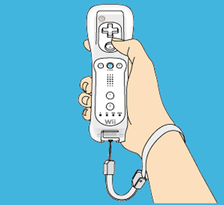
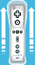

Bit Man!!には２通りの操作方法があります。
操作感覚が大きく異なるので、攻略に行き詰ったときや気分転換に変えてみてもいいかもしれません。
２つの操作スタイルは、Wiiリモコンの持ち方で自動的に設定されます。
ゲームが進むにつれて、操作が増えていきます。ビット数が増えたら、新しく出来るようになったことを試してみましょう。
Wiiリモコンを横に持つスタイルです。 初心者にはこちらがおすすめです。
8ビットから
64ビットから
32ビットから
128ビットのみ
Wiiリモコンを操縦桿のように縦に持つスタイルです。平らな面の上に置いて操作します。


128のみ